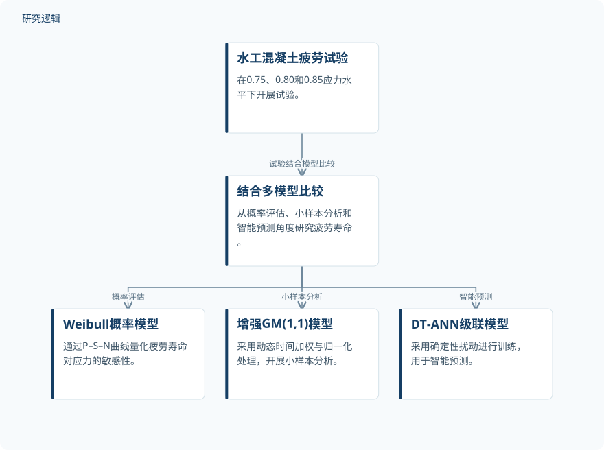

摘要解读
水工混凝土疲劳寿命预测的多模型研究
Multi‐Model Study of Fatigue Life Prediction for Hydraulic Concrete
解读更新 2026-11-08 21:43 · 依据公开摘要整理，未核验全文细节
水工混凝土在复杂应力下的疲劳寿命如何预测？这项研究将疲劳试验与多模型比较结合，从概率评估、小样本分析和智能预测三个角度组织寿命预测方法。其阅读价值不仅在于模型表现，也在于不同方法分别回答什么问题。
文章目录
复杂应力下，疲劳寿命需要多角度评估
研究聚焦水工混凝土的疲劳寿命预测难题，并将其与结构耐久性设计、安全评估及长期安全运行联系起来。摘要提出的思路不是仅用一个模型给出寿命结果，而是结合试验，对不同类型的预测方法进行比较。
疲劳试验结合三类预测模型
研究在0.75、0.80和0.85应力水平下开展疲劳试验，并结合多模型比较。概率分析采用基于Weibull分布的模型，通过P–S–N曲线量化疲劳寿命对应力的敏感性。
小样本分析采用GM(1,1)模型，并引入动态时间加权与归一化处理；智能预测采用DT‐ANN级联模型，以确定性扰动进行训练。摘要明确了这些方法要素，但未展开具体计算流程、模型结构或训练配置。
依据摘要整理的试验与多模型研究关系


仅展示摘要明确陈述的疲劳试验与模型比较关系，分支不代表模型之间存在串联计算或结果融合。
下载 SVG图示关系说明
实线表示相邻阶段的信息流，虚线表示跨阶段联系或反馈。
水工混凝土疲劳试验 → 结合多模型比较：试验结合模型比较；结合多模型比较 → Weibull概率模型：概率评估；结合多模型比较 → 增强GM(1,1)模型：小样本分析；结合多模型比较 → DT‐ANN级联模型：智能预测
非线性滞回与分阶段破坏，连接寿命预测
试验观察到，循环加载引发非线性滞回，破坏过程表现为微裂纹萌生、稳定扩展和宏观断裂三个阶段。这是摘要报告的材料响应与破坏过程发现，不能据此进一步推断各阶段的持续时间或具体损伤阈值。
模型方面，增强后的GM(1,1)在小样本条件下达到Level 1精度，DT‐ANN级联模型表现出较强的预测性能。作者将三类模型概括为“概率评估—小样本分析—智能预测”的多层次方法体系雏形；摘要未给出足以判定模型优劣排序的定量比较。
精度等级与预测表现仍需核对验证边界
仅凭摘要，无法判断试件数量、材料与加载条件的覆盖范围，也无法确认试验如何表征所讨论的复杂应力。小样本的具体规模、Level 1的判定标准、模型误差指标、比较基线以及训练与验证数据的划分均未在摘要中报告；这不等于论文未开展相关工作。
摘要将耐久性设计和安全评估作为研究价值，但没有提供工程应用验证的具体结果。因此，不能把模型预测表现直接等同于已经实现结构寿命延长、安全水平提升或现场运维效果改善。
阅读启发：关注模型分工，而非急于选出赢家
阅读启发：后续阅读可重点核对，概率模型的应力敏感性描述、小样本模型的精度等级与智能模型的预测表现，是否采用可对照的评价依据。若从智能运维角度理解这项工作，还应关注试验条件与实际结构工况之间的适用边界，而不是直接将疲劳寿命预测视为已验证的现场剩余寿命评估能力。
以上为本站阅读启发与建议，不是论文已验证的结论。